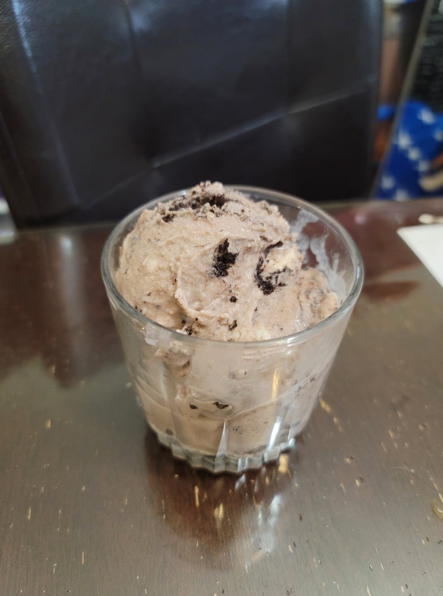

Cookies and Cream Ice Cream

Ingredients:
- 1 cup Milk
- 3/4 cup Sugar
- 2 cups Heavy cream
- 2 tsp Vanilla extract
- 1 cup Oreos, chopped
Instructions:
- In a pot over medium heat, add in the milk and sugar. Heat until the sugar completely dissolves, then remove from heat.
- Add in the heavy cream and vanilla extract. Transfer the mixture to a fridge and let chill until very cold.
- Pour the mixture into an already churning ice cream maker. Let churn until soft serve consistency, 20-30 minutes.
- Add in the chopped oreos and let churn for 5-10 more minutes. Transfer the mixture to a sealable container and place into the freezer until firm. Serve cold.